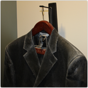

Character Sketches
Reflections—Past and Present
Centennial Featured Stories

Our Stories
CHARACTER SKETCHES
Ed Booz founded Booz Allen Hamilton with the belief that the right people in the right roles help a company thrive. And for over 100 years, Booz Allen’s success has derived from its ability to attract, develop, and deploy skilled people with innovative ideas. The firm has always cultivated a diverse cast of characters with varied backgrounds and personalities, starting with its early leaders: Edwin Booz, James Allen, and Carl Hamilton. Here some of the firm’s leaders in 2014 sharing their perspectives on the history and future—of our firm, our profession, our community of clients, and our role in making the world a better place.
"Here's what the house is going to look like."
"You never really know what life has in store for you."
“The best people doing the best work for the best clients.”
“It’s great to work all day with your friends.”
“What Booz Allen meant to me? It was pure opportunity.”
“I didn’t stop supporting the nation when I retired from government”
“Part of leading is to help people be their best.”
“How do you see over the horizon?”
“I enjoy building things.”
“We build things for our clients”
“Leave no stone unturned”
Executive Vice President & Chief Financial Officer Sam Strickland shares life lessons from his summer job as a carpenter.
From supporting the arts to helping small businesses survive, Reggie Van Lee has powerfully integrated his business success with his passion for community service.
Ralph Shrader, Booz Allen’s centennial CEO and seventh Chairman, looks back on early lessons in collaboration from high school sports, and looks ahead to the importance of ensuring that Booz Allen remains a special place committed to being and doing the best.
Working hard and playing hard as part of strong team has enabled Lloyd Howell to take risks and seize opportunities.
Karen Dahut shares her perspective on career growth in a meritocracy, and how innovation can help her clients sleep better at night.
Reflecting on her career in various government positions and at Booz Allen, Joan Dempsey shares the importance, excitement, and rewards of supporting the nation and the nation’s security.
Bill Stasior, the sixth chairman of Booz Allen, reflects on early influences on his leadership philosophy, what attracted him to Booz Allen, and Jim Allen, one of the firm’s founders.
When he was around 10 years old, Mike McConnell made a commitment to never be afraid of change. Here he shares how that outlook translated into anticipating threats as an intelligence officer and embracing technology at the right time to lead cybersecurity at Booz Allen.
Joseph Logue talks about how he learned early on that if he applied heart and thought, he could build anything. At Booz Allen, that life lesson led to his building many businesses and putting clients’ interests first —including shutting down programs he supported because he believed his clients no longer needed them.
Booz Allen is more than a management technology consulting firm, says Jack Mayer, who discusses how the firm supports career growth for both people who want to move up the management ranks, and those who build things for clients and want to be successful engineers and technicians.
Gary Mather describes his approach to winning business, referred to as “leave no stone unturned,” which involves being immersed in what’s important to the client and doing part of the job in the proposal.
REFLECTIONS—PAST AND PRESENT
With 100 years of history, Booz Allen Hamilton has many memorable stories that make up our corporate lore. Some narratives convey our commitment to client service, others illustrate people living up to our Core Values, and still others are chiefly amusing anecdotes. Here we share stories from a few of the firm’s more memorable characters—distinctive individuals recounting interesting events. Each month during 2014, we’ll add new written and video stories to this page, so check back often.
Saving The Client's Life
Two Degrees of Separation
The Origins of the Voluntary Chain Store
The Most Entertaining Presentation
Helping Clients Envision the Future
SAVING THE CLIENT’S LIFE
“I yelled up to the pilot, ‘Hey, the door’s open here!’"
Retired Senior Vice President John Wing led Booz Allen’s Transportation Consulting Division. He told this story in a 2004 interview.
An assignment for the Coast Guard sent our team around the U.S., looking at their maintenance of buoys and maritime navigation structures. On one trip to Alaska in a little seaplane, my client—a Coast Guard captain—sat next to me. All of a sudden, the door next to him flew open. I grabbed onto my client and yelled up to the pilot, “Hey, the door’s open here!”
“No problem,” he called back. “It happens all the time. There’s a rope in the overhead. Get it and tie up that handle.” We did. It worked. I’ll always remember that as the time we saved not just the project, but the client.
TWO DEGREES OF SEPARATION
“Without Jim Allen’s generosity, I probably wouldn’t have gone to college."
Bill Stasior, Booz Allen Chairman and CEO from 1991 through 1999, told this personal story for a commemorative booklet published after the death of Jim Allen.
In the early 1960s, I was able to attend Northwestern because of a scholarship program for caddies started by the famous amateur golfer Chick Evans. Years later, after I became CEO of Booz Allen, I visited Jim Allen in Florida and learned that he had been one of the founding contributors of the Evans Scholar Program.
I was struck by what a small world this is, by how the past affects the present and future, and I realized that, without Jim Allen’s generosity, I probably wouldn’t have gone to college—at least not a college of Northwestern’s caliber. And I most probably would not have joined the firm. When he heard this story, Jim commented: "Well, the investment has obviously paid off."
THE ORIGINS OF THE VOLUNTARY CHAIN STORE
“Out of this work grew…the idea of chain brands like True Value Hardware."
Jim Allen, a Booz Allen founder and former chairman, told this story in a 1982 oral-history interview.
There used to be a firm in Chicago called Hibbard-Spencer-Bartlett. They were wholesalers of hardware—in those days, an important business. I spent one summer traveling with 40 of their salesmen, to see what they were doing with their time. We were trying to find out how they could make their services more effective through the independent hardware stores. Ward’s and Sears were beginning to make themselves felt, and Hibbard-Spencer was trying to meet this new competition.
We found out that the salesmen were spending most of their time with their weakest outlets. There they had more time to talk about fishing, baseball, and the kids. At the busiest outlets, they didn’t have any time to talk; those merchants were busy with their customers, setting up merchandise displays and writing ads. We found that the Hibbard-Spencer salesmen had nothing to suggest to these merchants, other than to lay down a 4,000-page catalogue and say, “Is there anything you want?”
On the basis of these findings, we helped them restructure their sales coverage. The outlets where volume was moving should get most of the attention. Hibbard-Spencer had to be of real service to these merchants, rather than just take orders. Out of this work grew the voluntary chain idea, the idea of chain brands like True Value Hardware, where the supplier would provide marketing techniques along with the merchandise.

THE MOST ENTERTAINING PRESENTATION
“My suit was melting before their eyes. Drip. Drip. Drip.“
Charles “Chuck” Allison is a retired Booz Allen senior vice president who was based in Chicago. He recorded a video version of this story, which he often told at training sessions.
Back in the winter of 1972, I got an emergency call from Zurich. The chairman of a large multinational company asked me to be in Switzerland the next day by 11 a.m. for a meeting of the board of directors. The question was, Who should be the U.S. subsidiary’s next president?
I grabbed my overnight bag, dashed to the St. Louis airport, chartered a small plane to Chicago, and jumped on the evening flight to Zurich. Early the next morning I landed in Zurich, slightly groggy, and was then off by taxi to a downtown hotel to rest, freshen up, and prepare. It was 8 a.m. What a shock when I saw myself in the mirror! My suit looked as though I had slept in it for three days. What to do? I remembered an old technique my father had used: hang your coat and trousers on the shower rod in the hotel bathroom. Turn on the hot water in the bathtub. Shut the bathroom door and let the wrinkles steam away.
I got the process under way and flopped on my hotel bed for a ten-minute rest. I fell asleep and woke up, not ten minutes but an hour later, at nine o’clock. I jumped off the bed and groped around for my suit in the steam-choked bathroom. It was soaking, sopping, saturated wet. With only a couple of hours left, I had to improvise. Luckily I had a balcony overlooking Lake Zurich. So I hung my coat and trousers on the railing and flopped down on the bed for another quick cat-nap. Again, I over-napped. Perhaps one hour later I woke up with a start and scrambled to get ready. Shower, shave, fresh shirt, then out to the balcony for my suit. It was frozen—stiff as a board. I had no choice: scraping and stretching, straining and tugging, I finally got inside it.
It was now 10:30, thirty minutes before meeting time. I walked like a wooden soldier. Every time I moved, my suit gave off little tinkling noises. Since our Swiss client’s office was only three blocks from my hotel, I decided to go by foot. My suit crunched as the ice crystals began to break up. I made it just in time, at one minute before 11 o’clock. I was ushered into the boardroom to confer with 12 solemn Swiss directors, none of whom I had met before.
As I nervously neared the conclusion of my report, I began to feel damp. My suit was melting before their eyes. Drip. Drip. Drip. Puddles formed on the floor, on my chair, and on the boardroom tabletop. My Swiss friends were mesmerized. Eventually I could stand it no longer. I stopped the presentation, took a deep breath, and said, “Gentlemen, I began this presentation with a slight problem. I had only one suit, and this morning it froze. I will shortly end this presentation with a somewhat larger problem. My frozen suit is thawing. I think you deserve an explanation.” Then I blurted out the whole silly chain of events.
I have rarely seen a group of men laugh so hard. The chairman patted me on the back and said, “This has been a most interesting and entertaining presentation.” Then he invited me to join the board for lunch. That crazy meeting turned out to be the beginning of a fruitful relationship with our fine Swiss client. The moral is: You can still win clients, even when you’re all wet.
HELPING CLIENTS ENVISION THE FUTURE
Read more Booz Allen stories in the book published in 2004 for the firm’s 90th anniversary.
Helping Clients Envision the Future was produced in a limited press run and is not available for sale.
Since its founding in 1914, Booz Allen has been involved in the emergence of modern corporations in the 1920s and 1930s, the Allied mobilization in World War II, the beginning and end of the Cold War, the dawn of the Space Age, the evolution of the personal computer, the breakup of old telephone systems and the creation of new ones, early public-private sector work in the European Union, the emergence of strong economies in Asia and South America, the waves of deregulation in the 1980s, the movement for environmental protection, and the birth of the modern U.S. National Football League. Booz Allen has also been witness to or participant in the reunification of Germany, the Gulf Wars, and the response to the terrorist attacks of 9/11.
The firm’s 90th anniversary book, Helping Clients Envision the Future, captures the highlights of Booz Allen’s rich history up until 2004 through 128 pages of narrative, personal anecdotes, full-color images, and historical artifacts.
Featured Centennial Stories
As Booz Allen celebrates its centennial, we honor the legacy left by Edwin Booz with the unifying theme “Start with Character.” Throughout 2014, we’ll share stories of our rich heritage and vision for the future—pulled through three important subthemes: Act with Integrity, Serve with Purpose, and Reach Forward. We invite you to explore our featured stories:
Start With Character
Ringing In Our Centennial
We are Innovators
Serving Our Community
START WITH CHARACTER
A 100-Year heritage that sets us apart
As Booz Allen celebrates its centennial, we honor the legacy left by Edwin Booz with the unifying theme “Start with Character.” Read More.
START WITH CHARACTER
A 100-Year heritage that sets us apart
As Booz Allen celebrates its centennial, we honor the legacy left by Edwin Booz with the unifying theme “Start with Character.” Read More.
WE ARE INNOVATORS
Rethinking Client Problems
Innovation is in our DNA. Today, we’re investing in new capabilities and bringing them together in a collection of integrated solutions platforms through Booz Allen’s Strategic Innovation Group. Our charge is to deliver new and unique solutions for our clients that don’t exist today. As our firm marks its 100th year in business, we are reaffirming our commitment to entrepreneurship and the art of the possible Read More.
SERVING OUR COMMUNITY
A Century of Spirit and Service
The most fitting way for Booz Allen to celebrate 100 years of serving our communities is to build on that legacy with the same strength of character and commitment. Read More.
The World of Degas/Cassatt
Exploring the Art of Collaboration
Throughout Booz Allen’s 100th anniversary year, we are partnering with several leading institutions including the National Gallery of Art. We are proud to sponsor Degas/Cassatt, a free exhibition of some 70 works in a variety of media by Edgar Degas and Mary Cassatt. Read More.
Treasure Life’s Characters
Building Excellence over Time
Booz Allen’s centennial year centers on the theme “Start with Character”—one of the core consulting values penned by our founder, Edwin Booz. But how exactly does one develop personal character? Our Chairman and CEO Ralph Shrader believes that character is built through the influences of certain people—the characters you surround yourself with at various times and places in your life. Read More.
- What We Do
Featured Offerings
 Mobile Tactical Forensic Device
Mobile Tactical Forensic Device
The VAMPIRE™ Tactical Forensic Device gives frontline law enforcement and military operators the instant answers they need to deliver a tactical forensic edge in the field.
 Translating Data into Insights and Action
Translating Data into Insights and Action
Booz Allen’s Explore Data Science introduces common data science theory and techniques to help programmers, mathematicians, and other technical professionals expand their data science expertise.
- Who We Serve
Featured Capabilities
With an established legacy of helping clients overcome complex challenges, Booz Allen Hamilton expanded its global presence into Southeast Asia.
Booz Allen Commercial Solutions is laser-focused on enabling our clients to succeed. Our dedicated teams understand business imperatives, combining in-depth industry knowledge with operational expertise.
- Ideas & Insights
Featured Ideas
Booz Allen Hamilton created the Cyber Solutions Handbook to provide pragmatic insight and assistance on how to address the key issues facing cybersecurity leaders today.
Booz Allen explains how to move beyond the Internet of Things (IoT) rhetoric, and how to realize value today.
- About UsOur Commitments
 Our Firmwide Commitment to Women
Our Firmwide Commitment to Women
As we focus on building a diverse workforce, we’re committed to offering women the tools and opportunities they need to enhance their skills and build a career.
Booz Allen was one of the first organizations in the United States to adopt a formal statement of its business ethics, which translate into our 10 Core Values.
- Media CenterMedia Center
 Celebrating Service with 152,000 Hours
Celebrating Service with 152,000 Hours
Booz Allen celebrated our centennial year with a goal of 100,000 volunteer hours. We tallied over 150,000 hours firmwide.
Booz Allen Associate and Data Scientist Steve Mills discusses the National Data Science Bowl.
- CareersBooz Allen Careers
What's so special about working at Booz Allen? We value you as an individual—not just as a resource. Come explore our culture of collaboration, innovation, and excellence.
At Booz Allen you'll work with clients whose missions matter. Explore our job openings for the first step in your Booz Allen career.
- InvestorsInvestor Highlights
Booz Allen Hamilton's initial public offering took place in November 2010. For a list of our previous quarterly earnings releases and filings since IPO, please visit the Investor Relations section of the website.
Investor Presentation Investor Presentation
Investor Presentation
Please read our latest Investor Presentation to learn more about our history, differentiation, and strategy.
 Delivering Enduring Results for Southeast Asia
Delivering Enduring Results for Southeast Asia Business Results that Give You Edge
Business Results that Give You Edge Cyber Solutions Handbook
Cyber Solutions Handbook Move Past the Rhetoric and Move Toward Success
Move Past the Rhetoric and Move Toward Success Core Values
Core Values Are You Ready to Change the World?
Are You Ready to Change the World? Life at Booz Allen
Life at Booz Allen Your Booz Allen career starts here
Your Booz Allen career starts here Quarterly Financials
Quarterly Financials